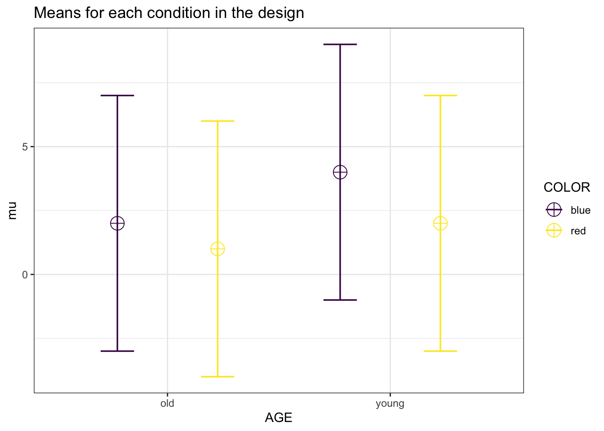
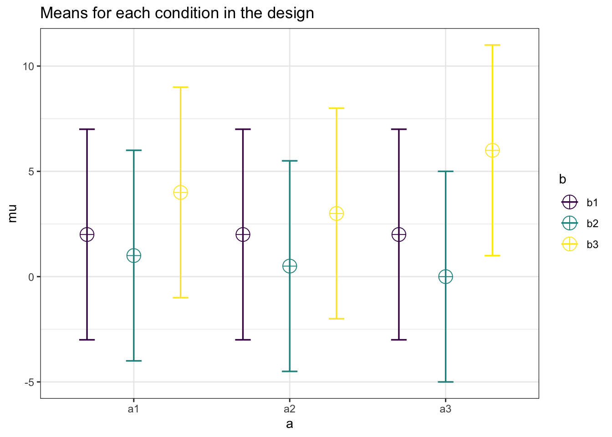

Chapter 3 Repeated Measures ANOVA
3.1 Part 1
In a repeated measures design multiple observations are collected from the same participants. In the simplest case, where there are two repeated observations, a repeated measures ANOVA equals a dependent or paired t-test. The advantage of repeated measures designs is that they capitalize on the correlations between the repeated measurements. Let’s first explore the impact of this correlation on the power of a repeated measures ANOVA.
3.1.1 Two conditions, medium effect size
To illustrate the effect of correated observations, we start by simulating data for a medium effect size for a dependent (or paired, or within-subject) t-test. Let’s first look at g*power Faul et al. (2007). If we want to perform an a-priori power analysis, we are asked to fill in the effect size dz. As Cohen (1988) writes, “The Z subscript is used to emphasize the fact that our raw score unit is no longer X or Y, but Z”, where Z are the difference scores of X-Y.

Within designs can have greater power to detect differences than between designs because the values are correlated, and a within design requires less participants because each participant provides multiple observations. One difference between an independent t-test and a dependent t-test is that an independent t-test has 2(n-1) degrees of freedom, while a dependent t-test has (n-1) degrees of freedom. The sample size needed in a two-group within-design (NW) relative to the sample needed in two-group between-designs (NB), assuming normal distributions, and ignoring the difference in degrees of freedom between the two types of tests, is (from Maxwell, Delaney, and Kelley (2004), p. 561, formula 45):
\(N_{W}=\frac{N_{B}(1-\rho)}{2}\)
The division by 2 in the equation is due to the fact that in a two-condition within design every participant provides two data-points. The extent to which this reduces the sample size compared to a between-subject design depends on the correlation (r) between the two dependent variables, as indicated by the 1-r part of the equation. If the correlation is 0, a within-subject design needs half as many participants as a between-subject design (e.g., 64 instead 128 participants), simply because every participants provides 2 datapoints. The higher the correlation, the larger the relative benefit of within designs, and whenever the correlation is negative (up to -1) the relative benefit disappears.
Whereas in an independent t-test the two observations are uncorrelated, in a within design the observations are correlated. This has an effect on the standard deviation of the difference scores. In turn, because the standardized effect size is the mean difference divided by the standard deviation of the difference scores, the correlation has an effect on the standardized mean difference in a within design, Cohen’s dz. The relation, as Cohen (1988, formula 2.3.7) explains, is:
\(\sigma_{z}=\sigma\sqrt{2(1-\rho)}\)
Therefore, the relation between dz and d is \(\sqrt{2(1-\rho)}\). A given difference between population means for matched (dependent) samples is standardized by a value which is \(\sqrt{2(1-\rho)}\) as large as would be the case were they independent. If we enter a correlation of 0.5 in the formula, we get \(\sqrt{2(0.5)}=1\). In other words, when the correlation is 0.5, d = dz. When there is a strong correlation between dependent variables, for example r = 0.9, we get \(d=d_{z}\sqrt{2(1-0.9)}\), and a dz of 1 would be a d = 0.45. Reversely, \(d_{z}=\frac{d}{\sqrt{2(1-r)}}\), so with a r = 0.9, a d of 1 would be a dz = 2.24. Some consider this increase in dz compared to d when observations are strongly correlated an ‘inflation’ when estimating effect sizes, but since the reduction in the standard deviation of the difference scores due to the correlation makes it easier to distinguish signal from noise in a hypothesis test, it leads to a clear power benefit.
# Check sample size formula Maxwell
# Power is pretty similar with n/2, same d (assuming r = 0.5).
# Small differences due to df = 2(n-1) vs df = n-1
pwr.t.test(d = 0.05,
n = c(2000, 4000, 8000),
sig.level = 0.05,
type = "two.sample",
alternative = "two.sided")##
## Two-sample t test power calculation
##
## n = 2000, 4000, 8000
## d = 0.05
## sig.level = 0.05
## power = 0.3524674, 0.6086764, 0.8853424
## alternative = two.sided
##
## NOTE: n is number in *each* grouppwr.t.test(d = 0.05,
n = c(1000, 2000, 4000),
sig.level = 0.05,
type = "paired",
alternative = "two.sided")##
## Paired t test power calculation
##
## n = 1000, 2000, 4000
## d = 0.05
## sig.level = 0.05
## power = 0.3520450, 0.6083669, 0.8852320
## alternative = two.sided
##
## NOTE: n is number of *pairs*There is no equivalent “fz” for Cohen’s f for a within subject ANOVA. For two groups, we can directly compute Cohen’s f from Cohen’s d for two groups, as Cohen (1988) describes, because f = 1/2d. For a d = 0.5, f = 0.25. In g*power we can run a 2 group within-subject power analysis for ANOVA. We plan for 80% power, and reproduce the anaysis above for the dependent t-test. This works because the correlation is set to 0.5, when d = dz, and thus the transformation of f=1/2d works.

If we change the correlation to 0.7 and keep all other settings the same, the repeated measure a-priori power analysis yields a sample of 21. The correlation increases the power for the test.

To reproduce this analysis in g*power with a dependent t-test we need to change dz following the formula above, \(d_{z}=\frac{0.5}{\sqrt{2(1-0.7)}}\), which yields dz = 0.6454972. If we enter this value in g*power for an a-priori power analysis, we get the exact same results (as we should, since an repeated measures ANOVA with 2 groups equals a dependent t-test). This example illustrates that the correlation between dependent variables always factors into a power analysis, both for a dependent t-test, and for a repeated measures ANOVA. Because a dependent t-test uses dz the correlation might be less visible, but given the relation between d and dz, the correlation is always taken into account and can greatly improve power for within designs compared to between designs.

We can perform both these power analyses using Superpower as well. We set groups to 2 for the simulation, n = 34 (which should give 80.777 power, according to the Faul et al. (2007) program), a correlation among repeated measures of 0.5, and an alpha of 0.05. In this case, we simulate data with means -0.25 and 0.25, and set the sd to 1. This means we have a mean difference of 0.5, and a Cohen’s d of 0.5/1 = 0.5. In the first example, we set the correlation to 0.5, and the result should be 80.77% power, and an effect size estimate of 0.5 for the simple effect. We also calculate partial eta-squared for the ANOVA, which equals \(\frac{f^2}{f^2+1}\), or 0.05882353.
## [1] 0.05882353mu <- mu_from_ES(K = K, ES = ES)
design = paste(K,"w",sep = "")
labelnames <- c("speed", "fast", "slow")
design_result <- ANOVA_design(design = design,
n = n, mu = mu, sd = sd, r = r,
labelnames = labelnames)
alpha_level <- 0.05simulation_result <- ANOVA_power(design_result,
alpha_level = alpha_level,
nsims = nsims, verbose = FALSE)| power | effect_size | |
|---|---|---|
| anova_speed | 80.74 | 0.2149221 |
| power | partial_eta_squared | cohen_f | non_centrality | |
|---|---|---|---|---|
| speed | 80.77775 | 0.2048193 | 0.5075192 | 8.5 |
The results of the simulation are indeed very close to 80.777%. Note that the simulation calculates Cohen’s dz effect sizes for paired comparisons - which here given the correlation of 0.5 is also 0.5 for a medium effect size.
We should see a larger dz if we increase the correlation, keeping the sample size the same, following the example in g*power above. We repeat the simulation, and the only difference is a correlation between dependent variables of 0.7. This should yield an effect size dz = 0.6454972.
## [1] 0.05882353mu <- mu_from_ES(K = K, ES = ES)
design = paste(K,"w",sep = "")
labelnames <- c("speed", "fast", "slow")
design_result <- ANOVA_design(design = design,
n = n, mu = mu, sd = sd, r = r,
labelnames = labelnames)
alpha_level <- 0.05| fast | slow | |
|---|---|---|
| fast | 1.0 | 0.7 |
| slow | 0.7 | 1.0 |
simulation_result <- ANOVA_power(design_result,
alpha_level = alpha_level,
nsims = nsims,
verbose = FALSE)| power | effect_size | |
|---|---|---|
| anova_speed | 80.48 | 0.3153414 |
| power | partial_eta_squared | cohen_f | non_centrality | |
|---|---|---|---|---|
| speed | 80.33235 | 0.3043478 | 0.6614378 | 8.75 |
## [1] 0.3227486Entering this f in g*power, with a correlation of 0.5, yields the same as entering f = 0.25 and correlation = 0.7.
3.2 Part 2
Here, we will examine a repeated measures experiment with 3 within-subject conditions, to illustrate how a repeated measures ANOVA extends a dependent t-test with 3 groups.
In the example for a two-group within design we provided a specific formula for the sample size benefit for two groups. The sample size needed in within-designs (NW) with more than 2 conditions, relative to the sample needed in between-designs (NB), assuming normal distributions and compound symmetry, and ignoring the difference in degrees of freedom between the two types of tests, is (from Maxwell, Delaney, and Kelley (2004), p. 562, formula 47):
\(N_{W}=\frac{N_{B}(1-\rho)}{a}\)
Where “a” is the number of within-subject levels.
3.2.1 The relation between Cohen’s f and Cohen’s d
Whereas in the case of a repeated measures ANOVA with 2 groups we could explain the principles of a power analysis by comparing our test against a t-test and Cohen’s d, this becomes more difficult when we have more than 2 groups. It is more useful to explain how to directly calculate Cohen’s f, the effect size used in power analyses for ANOVA. Cohen’s f is calculated following Cohen (1988), formula 8.2.1 and 8.2.2:
\(f = \sqrt{\frac{\frac{\sum(\mu-\overline{\mu})^2)}N}\sigma}\)
Imagine we have a within-subject experiment with 3 conditions. We ask people what they mood is when their alarm clock wakes them up, when they wake up naturally on a week day, and when they wake up naturally on a weekend day. Based on pilot data, we expect the means (on a 7 point validated mood scale) are 3.8, 4.2, and 4.3. The standard deviation is 0.9, and the correlation between the dependent measurements is 0.7. We can calculate Cohen’s f for the ANOVA, and Cohen’s dz for the contrasts:
mu <- c(3.8, 4.2, 4.3)
sd <- 0.9
f <- sqrt(sum((mu - mean(mu)) ^ 2) / length(mu)) / sd
#Cohen, 1988, formula 8.2.1 and 8.2.2
f## [1] 0.2400274## [1] 0.5737753## [1] 0.7172191## [1] 0.1434438The relation between Cohen’s d or dz and Cohen’s f becomes more difficult when there are multiple groups, because the relationship depends on the pattern of the means. Cohen (1988) presents calculations for three patterns, minimal variability (for example, for 5 means: -0.25, 0, 0, 0, 0.25), medium variability (for example, for 5 means: -0.25, -0.25, 0.25, 0.25, 0.25 or -0.25, -0.25, -0.25, 0.25, 0.25). For these three patterns, formula’s are available that compute Cohen’s f from Cohen’s d, where d is the effect size calculated for the difference between the largest and smallest mean (if the largest mean is 0.25 and the smallest mean is -0.25, 0.25 - -0.25 = 0.5, so d is 0.5 divided by the standard deviation of 0.9). In our example, d would be (4.3-3.8)/0.9 = 0.5555556. If we divide this value by sqrt(2*(1-r)) we have dz = 0.5555556/0.7745967 = 0.7172191.
We have created a custom function that will calculate f from d, based on a specification of one of the three patterns of means. Our pattern is most similar (but not identical) to a maximum variability pattern (two means are high, one is lower). So we could attempt to calculate f from d (0.5555556), by calculating d from the largest and smallest mean.
This function allows you to calculate f, d and eta squared following Cohen (1988), p 277. The patterns are: 1. Minimum variability: one mean at each end of d, the remaining k- 2 means all at the midpoint. 2. Intermediate variability: the k means equally spaced over d. 3. Maximum variability: the means all at the end points of d.
For each of these patterns, there is a fixed relationship between f and d for any given number of means, k.
Pattern 1 For any given range of means, d, the minimum standard deviation, f1, results when the remaining k - 2 means are concentrated at the mean of the means (0 when expressed in standard units), i.e., half-way between the largest and smallest.
Pattern 2 A pattern of medium variability results when the k means are equally spaced over the range, and therefore at intervals of d/(k- 1).
Pattern 3 It is demonstrable and intuitively evident that for any given range the dispersion which yields the maximum standard deviation has the k means falling at both extremes of the range. When k is even, !k fall at - !d and the other !k fall at + !d; when k is odd, (k + 1 )/2 of the means fall at either end and the (k- 1)/2 remaining means at the other. With this pattern, for all even numbers of means, use formula (8.2.12). When k is odd, and there is thus one more mean at one extreme than at the other, use formula (8.2.13).
calc_f_d_eta <- function(mu, sd, variability){
if (variability == "minimum") {
k = length(mu)
d <- (max(mu) - min(mu)) / sd
f <- d * sqrt(1 / (2 * k))
f2 <- f ^ 2
ES <- f2 / (f2 + 1)
}
if (variability == "medium") {
k = length(mu)
d <- (max(mu) - min(mu)) / sd
f <- (d / 2) * sqrt((k + 1) / (3 * (k - 1)))
f2 <- f ^ 2
ES <- f2 / (f2 + 1)
}
if (variability == "maximum") {
k = length(mu)
d <- (max(mu) - min(mu)) / sd
f <- ifelse(k %% 2 == 0, .5 * d, d * (sqrt(k ^ 2 - 1) / (2 * k)))
f2 <- f ^ 2
ES <- f2 / (f2 + 1)
}
invisible(list(mu = mu,
sd = sd,
d = d,
f = f,
f2 = f2,
ES = ES))
}
res <- calc_f_d_eta(mu = mu, sd = sd, variability = "maximum")
res$f## [1] 0.2618914## [1] 0.5555556We see the Cohen’s f value is 0.2618914 and d = 0.5555556. The Cohen’s f is not perfectly accurate - it is assuming the pattern of means is 3.8, 4.3, 4.3, and not 3.8, 4.2, 4.3. If the means and sds are known, it is best to calculate Cohen’s f directly from these values.
3.2.2 Three within conditions, medium effect size
We can perform power analyses for within designs using simulations. We set groups to 3 for the simulation, n = 20, and the correlation between dependent variables to 0.8. If the true effect size is f = 0.25, and the alpha level is 0.05, the power is 96.6%. In this case, we simulate data with means -0.3061862, 0.0000000, and 0.3061862, and set the sd to 1.
## [1] 0.05882353mu <- mu_from_ES(K = K, ES = ES)
#Cohen, 1988, formula 8.2.1 and 8.2.2
sqrt(sum((mu - mean(mu)) ^ 2) / length(mu)) / sd ## [1] 0.25design = paste(K, "w", sep = "")
labelnames <- c("speed", "fast", "medium", "slow")
design_result <- ANOVA_design(design = design,
n = n,
mu = mu,
sd = sd,
r = r,
labelnames = labelnames)
alpha_level <- 0.05simulation_result <- ANOVA_power(design_result,
alpha_level = alpha_level,
nsims = nsims,
verbose = FALSE)| power | effect_size | |
|---|---|---|
| anova_speed | 97.04 | 0.345486 |
| power | partial_eta_squared | cohen_f | non_centrality | |
|---|---|---|---|---|
| speed | 96.91634 | 0.3303965 | 0.7024394 | 18.75 |
The results of the simulation are indeed very close to 96.9%.
We can see this is in line with the power estimate from Gpower:

We can also validate this by creating the code to do a power analysis in R from scratch:
K <- 3 #three groups
n <- 20
sd <- 1
r <- 0.8
alpha = 0.05
f <- 0.25
f2 <- f^2
ES <- f2 / (f2 + 1)
ES## [1] 0.05882353mu <- mu_from_ES(K = K, ES = ES)
design = paste(K, "w", sep = "")
labelnames <- c("speed", "fast", "medium", "slow")
design_result <- ANOVA_design(design = design,
n = n,
mu = mu,
sd = sd,
r = r,
labelnames = labelnames)
power_oneway_within(design_result)$power## [1] 96.91634## [1] 0.05882353## [1] 0.3303965## [1] 0.25## [1] 0.7024394We can even check the calculation of Cohen’s f SPSS style in g*power We take the g*power settings as illustrated above. We click the ‘Options’ button, and check the radio button next to ‘As in SPSS’. Click ok, and you will notice that the ‘Corr among rep measures’ field has disappeared. The correlation does not need to be entered seperately, but is incorporated in Cohen’s f. The value of Cohen’s f, which was 0.25, has changed into 0.7024394. This is the SPSS equivalent. The value is much larger. This value, and it’s corresponding partial eta-squared, incorporate the correlation between observations.

3.3 Part 3
We first repeat the simulation by Brysbaert:
# give sample size
N = 75
# give effect size d
d1 = .4 #difference between the extremes
d2 = .4 #third condition goes with the highest extreme
# give the correlation between the conditions
r = .5
# give number of simulations
nSim = nsims
# give alpha levels
alpha1 = .05 #alpha level for the omnibus ANOVA
alpha2 = .05 #also adjusted from original by DL# create vectors to store p-values
p1 <- numeric(nSim) #p-value omnibus ANOVA
p2 <- numeric(nSim) #p-value first post hoc test
p3 <- numeric(nSim) #p-value second post hoc test
p4 <- numeric(nSim) #p-value third post hoc test
# define correlation matrix
rho <- cbind(c(1, r, r), c(r, 1, r), c(r, r, 1))
# define participant codes
part <- paste("part",seq(1:N))
for (i in 1:nSim) {
#for each simulated experiment
data = mvrnorm(n = N,
mu = c(0, 0, 0),
Sigma = rho)
data[, 2] = data[, 2] + d1
data[, 3] = data[, 3] + d2
datalong = c(data[, 1], data[, 2], data[, 3])
conds = factor(rep(letters[24:26], each = N))
partID = factor(rep(part, times = 3))
output <- data.frame(partID, conds, datalong)
test <- aov(datalong ~ conds + Error(partID / conds), data = output)
tests <- (summary(test))
p1[i] <- tests$'Error: partID:conds'[[1]]$'Pr(>F)'[[1]]
p2[i] <- t.test(data[, 1], data[, 2], paired = TRUE)$p.value
p3[i] <- t.test(data[, 1], data[, 3], paired = TRUE)$p.value
p4[i] <- t.test(data[, 2], data[, 3], paired = TRUE)$p.value
}#printing all unique tests (adjusted code by DL)
sum(p1 < alpha1) / nSim
sum(p2 < alpha2) / nSim
sum(p3 < alpha2) / nSim
sum(p4 < alpha2) / nSim## [1] 0.7961## [1] 0.7624## [1] 0.7574## [1] 0.04523.4 Part 4
3.4.1 2x2 ANOVA, within-within design
We can simulate a 2x2 ANOVA, both factors manipulated within participants, with a specific sample size and effect size, to achieve a desired statistical power.
As Potvin and Schutz (2000) explain, analytic procedures for a two-factor repeated measures ANOVA do not seem to exist. The main problem is quantifying the error variance (the denominator when calculating lambda or Cohen’s f). Simulation based aproaches provide a solution.
We can reproduce the simulation coded by Ben Amsel
# define the parameters
# true effects (in this case, a double dissociation)
mu = c(700, 670, 670, 700)
sigma = 150 # population standard deviation
rho = 0.75 # correlation between repeated measures
nsubs = 25 # how many subjects?
nsims = nsims # how many simulation replicates?
# create 2 factors representing the 2 independent variables
cond = data.frame(X1 = rep(factor(letters[1:2]), nsubs * 2),
X2 = rep(factor(letters[1:2]), nsubs, each = 2))
# create a subjects factor
subject = factor(sort(rep(1:nsubs, 4)))
# combine above into the design matrix
dm = data.frame(subject, cond)Build Sigma: the population variance-covariance matrix
# create k x k matrix populated with sigma
sigma.mat <- rep(sigma, 4)
S <-
matrix(sigma.mat,
ncol = length(sigma.mat),
nrow = length(sigma.mat))
# compute covariance between measures
Sigma <- t(S) * S * rho
# put the variances on the diagonal
diag(Sigma) <- sigma^2 Run the simulation
# stack 'nsims' individual data frames into one large data frame
df = dm[rep(seq_len(nrow(dm)), nsims), ]
# add an index column to track the simulation run
df$simID = sort(rep(seq_len(nsims), nrow(dm)))
# sample the observed data from a multivariate normal distribution
# using MASS::mvrnorm with the mu and Sigma created earlier
# and bind to the existing df
make.y = expression(as.vector(t(mvrnorm(nsubs, mu, Sigma))))
df$y = as.vector(replicate(nsims, eval(make.y)))
# use do(), the general purpose complement to the specialized data
# manipulation functions available in dplyr, to run the ANOVA on
# each section of the grouped data frame created by group_by
mods <- df %>%
group_by(simID) %>%
do(model = aov(y ~ X1 * X2 + Error(subject / (X1 * X2)),
qr = FALSE, data = .))
# extract p-values for each effect and store in a data frame
p_val_1 = data.frame(
mods %>% do(as.data.frame(tidy(.$model[[3]])$p.value[1])),
mods %>% do(as.data.frame(tidy(.$model[[4]])$p.value[1])),
mods %>% do(as.data.frame(tidy(.$model[[5]])$p.value[1])))
colnames(p_val_1) = c('X1','X2','Interaction')The empirical power is easy to compute, it’s just the proportion of simulation runs where p < .05.
power.res = apply(as.matrix(p_val_1), 2,
function(x) round(mean(ifelse(x < .05, 1, 0) * 100),2))
power.res## X1 X2 Interaction
## 4.80 4.66 47.50Visualize the distributions of p-values
# plot the known effects
means = data.frame(cond[1:4,], mu, SE = sigma / sqrt(nsubs))
plt1 = ggplot(means, aes(y = mu, x = X1, fill = X2)) +
geom_bar(position = position_dodge(), stat = "identity") +
geom_errorbar(
aes(ymin = mu - SE, ymax = mu + SE),
position = position_dodge(width = 0.9),
size = .6,
width = .3
) +
coord_cartesian(ylim = c((.7 * min(mu)), 1.2 * max(mu))) +
theme_bw()
# melt the data into a ggplot friendly 'long' format
plotData <- melt(p_val_1, value.name = 'p')
# plot each of the p-value distributions on a log scale
options(scipen = 999) # 'turn off' scientific notation
plt2 = ggplot(plotData, aes(x = p)) +
scale_x_log10(breaks = c(1, 0.05, 0.001),
labels = c(1, 0.05, 0.001)) +
geom_histogram(colour = "darkblue", fill = "white") +
geom_vline(xintercept = 0.05, colour = 'red') +
facet_grid(variable ~ .) +
labs(x = expression(Log[10] ~ P)) +
theme(axis.text.x = element_text(color = 'black', size = 7))
# arrange plots side by side and print
grid.arrange(plt1, plt2, nrow = 1)We can reproduce this simulation:
# true effects (in this case, a double dissociation)
mu = c(700, 670, 670, 700)
sigma = 150 # population standard deviation
n <- 25
sd <- 150
r <- 0.75
string = "2w*2w"
alpha_level <- 0.05
labelnames = c("age", "old", "young", "color", "blue", "red")
design_result <- ANOVA_design(design = string,
n = n,
mu = mu,
sd = sd,
r = r,
labelnames = labelnames)simulation_result <- ANOVA_power(design_result,
alpha_level = alpha_level,
nsims = nsims,
verbose = FALSE)| power | effect_size | |
|---|---|---|
| anova_age | 4.99 | 0.0396351 |
| anova_color | 5.17 | 0.0405810 |
| anova_age:color | 47.80 | 0.1641690 |
| power | partial_eta_squared | cohen_f | non_centrality | |
|---|---|---|---|---|
| age | 5.00000 | 0.0000000 | 0.0000000 | 0 |
| color | 5.00000 | 0.0000000 | 0.0000000 | 0 |
| age:color | 48.40183 | 0.1428571 | 0.4082483 | 4 |
The simulations yield closely matching results.
3.4.2 Examine variation of means and correlation
# define the parameters
# true effects (in this case, a double dissociation)
mu = c(700, 670, 690, 750)
sigma = 150 # population standard deviation
rho = 0.4 # correlation between repeated measures
nsubs = 25 # how many subjects?
nsims = nsims # how many simulation replicates?
# create 2 factors representing the 2 independent variables
cond = data.frame(X1 = rep(factor(letters[1:2]), nsubs * 2),
X2 = rep(factor(letters[1:2]), nsubs, each = 2))
# create a subjects factor
subject = factor(sort(rep(1:nsubs, 4)))
# combine above into the design matrix
dm = data.frame(subject, cond)Build Sigma: the population variance-covariance matrix
# create k x k matrix populated with sigma
sigma.mat <- rep(sigma, 4)
S <-
matrix(sigma.mat,
ncol = length(sigma.mat),
nrow = length(sigma.mat))
# compute covariance between measures
Sigma <- t(S) * S * rho
# put the variances on the diagonal
diag(Sigma) <- sigma ^ 2 Run the simulation
# stack 'nsims' individual data frames into one large data frame
df = dm[rep(seq_len(nrow(dm)), nsims), ]
# add an index column to track the simulation run
df$simID = sort(rep(seq_len(nsims), nrow(dm)))
# sample the observed data from a multivariate normal distribution
# using MASS::mvrnorm with the mu and Sigma created earlier
# and bind to the existing df
make.y = expression(as.vector(t(mvrnorm(nsubs, mu, Sigma))))
df$y = as.vector(replicate(nsims, eval(make.y)))
# use do(), the general purpose complement to the specialized data
# manipulation functions available in dplyr, to run the ANOVA on
# each section of the grouped data frame created by group_by
mods <- df %>%
group_by(simID) %>%
do(model = aov(y ~ X1 * X2 + Error(subject / (X1 * X2)),
qr = FALSE, data = .))
# extract p-values for each effect and store in a data frame
p_val_2 = data.frame(mods %>%
do(as.data.frame(tidy(.$model[[3]])$p.value[1])),
mods %>% do(as.data.frame(tidy(.$model[[4]])$p.value[1])),
mods %>% do(as.data.frame(tidy(.$model[[5]])$p.value[1])))
colnames(p_val_2) = c('X1', 'X2', 'Interaction')The empirical power is easy to compute, it’s just the proportion of simulation runs where p <. 05.
power.res = apply(as.matrix(p_val_2), 2,
function(x) round(mean(ifelse(x < .05, 1, 0) * 100),2))
power.res## X1 X2 Interaction
## 9.47 30.17 46.45Visualize the distributions of p-values
means = data.frame(cond[1:4,], mu, SE = sigma / sqrt(nsubs))
plt1 = ggplot(means, aes(y = mu, x = X1, fill = X2)) +
geom_bar(position = position_dodge(), stat = "identity") +
geom_errorbar(
aes(ymin = mu - SE, ymax = mu + SE),
position = position_dodge(width = 0.9),
size = .6,
width = .3
) +
coord_cartesian(ylim = c((.7 * min(mu)), 1.2 * max(mu))) +
theme_bw()
# melt the data into a ggplot friendly 'long' format
plotData <- melt(p_val_2, value.name = 'p')
# plot each of the p-value distributions on a log scale
options(scipen = 999) # 'turn off' scientific notation
plt2 = ggplot(plotData, aes(x = p)) +
scale_x_log10(breaks = c(1, 0.05, 0.001),
labels = c(1, 0.05, 0.001)) +
geom_histogram(colour = "darkblue", fill = "white") +
geom_vline(xintercept = 0.05, colour = 'red') +
facet_grid(variable ~ .) +
labs(x = expression(Log[10] ~ P)) +
theme(axis.text.x = element_text(color = 'black', size = 7))
# arrange plots side by side and print
grid.arrange(plt1, plt2, nrow = 1)
We can reproduce this simulation:
# true effects (in this case, a double dissociation)
mu = c(700, 670, 690, 750)
sigma = 150 # population standard deviation
n <- 25
sd <- 150
r <- 0.4
string = "2w*2w"
alpha_level <- 0.05
labelnames = c("AGE", "old", "young",
"COLOR", "blue", "red")
design_result <- ANOVA_design(design = string,
n = n,
mu = mu,
sd = sd,
r = r,
labelnames = labelnames)| power | effect_size | |
|---|---|---|
| anova_AGE | 30.60 | 0.1143202 |
| anova_COLOR | 9.41 | 0.0541130 |
| anova_AGE:COLOR | 46.22 | 0.1595391 |
## Power and Effect sizes for ANOVA tests
## power partial_eta_squared cohen_f non_centrality
## AGE 30.4009 0.0864 0.3074 2.2685
## COLOR 9.5071 0.0171 0.1318 0.4167
## AGE:COLOR 45.9803 0.1351 0.3953 3.7500
##
## Power and Effect sizes for pairwise comparisons (t-tests)
## power effect_size
## p_AGE_old_COLOR_blue_AGE_old_COLOR_red 14.16 -0.18
## p_AGE_old_COLOR_blue_AGE_young_COLOR_blue 5.98 -0.06
## p_AGE_old_COLOR_blue_AGE_young_COLOR_red 30.91 0.30
## p_AGE_old_COLOR_red_AGE_young_COLOR_blue 9.00 0.12
## p_AGE_old_COLOR_red_AGE_young_COLOR_red 64.66 0.49
## p_AGE_young_COLOR_blue_AGE_young_COLOR_red 41.80 0.37| power | partial_eta_squared | cohen_f | non_centrality | |
|---|---|---|---|---|
| AGE | 30.400885 | 0.0863588 | 0.3074437 | 2.2685185 |
| COLOR | 9.507147 | 0.0170648 | 0.1317616 | 0.4166667 |
| AGE:COLOR | 45.980305 | 0.1351351 | 0.3952847 | 3.7500000 |
3.5 Part 5
Credit for the non-centrality parameter for the interaction goes to Andrew Vigotsky
3.5.1 2x2 ANOVA, within design
Potvin and Schutz (2000) simulate a wide range of repeated measure designs. They give an example of a 3x3 design, with the following correlation matrix:

Variances were set to 1 (so all covariance matrices in their simulations were identical). In this specific example, the white fields are related to the correlation for the A main effect (these cells have the same level for B, but different levels of A). The grey cells are related to the main effect of B (the cells have the same level of A, but different levels of B). Finally, the black cells are related to the AxB interaction (they have different levels of A and B). The diagonal (all 1) relate to cells with the same levels of A and B.
Potvin and Schutz (2000) examine power for 2x2 within ANOVA designs and develop approximations of the error variance. For a design with 2 within factors (A and B) these are:
For the main effect of A: \(\sigma _ { e } ^ { 2 } = \sigma ^ { 2 } ( 1 - \overline { \rho } _ { A } ) + \sigma ^ { 2 } ( q - 1 ) ( \overline { \rho } _ { B } - \overline { \rho } _ { AB } )\)
For the main effectof B: \(\sigma _ { e } ^ { 2 } = \sigma ^ { 2 } ( 1 - \overline { \rho } _ { B } ) + \sigma ^ { 2 } ( p - 1 ) ( \overline { \rho } _ { A } - \overline { \rho } _ { A B } )\)
For the interaction between A and B: \(\sigma _ { e } ^ { 2 } = \sigma ^ { 2 } ( 1 - \rho _ { \max } ) - \sigma ^ { 2 } ( \overline { \rho } _ { \min } - \overline { \rho } _ { AB } )\)
Let’s now compare the formulas in Potvin and Schutz (2000) with Superpower with a simple scenario.
mu = c(2,1,4,2)
n <- 20
sd <- 5
r <- .77
string = "2w*2w"
alpha_level <- 0.05
design_result <- ANOVA_design(design = string,
n = n,
mu = mu,
sd = sd,
r = r,
labelnames = labelnames,
plot = TRUE)
## old_blue old_red young_blue young_red
## old_blue 1.00 0.77 0.77 0.77
## old_red 0.77 1.00 0.77 0.77
## young_blue 0.77 0.77 1.00 0.77
## young_red 0.77 0.77 0.77 1.00| power | partial_eta_squared | cohen_f | non_centrality | |
|---|---|---|---|---|
| AGE | 75.61412 | 0.2917342 | 0.6417938 | 7.8260870 |
| COLOR | 75.61412 | 0.2917342 | 0.6417938 | 7.8260870 |
| AGE:COLOR | 14.36376 | 0.0437637 | 0.2139313 | 0.8695652 |
Further, as we use the analytical solution below, the variance components should be equal to the corresponding MSE from the ANOVA_exact produced anova_table object.
## Anova Table (Type 3 tests)
##
## Response: y
## num Df den Df MSE F pes Pr(>F)
## AGE 1 19 5.75 7.8261 0.291734 0.01149 *
## COLOR 1 19 5.75 7.8261 0.291734 0.01149 *
## AGE:COLOR 1 19 5.75 0.8696 0.043764 0.36278
## ---
## Signif. codes: 0 '***' 0.001 '**' 0.01 '*' 0.05 '.' 0.1 ' ' 1We can try to use the formula in Potvin and Schutz (2000).
k <- 1 #one group (because all factors are within)
rho_A <- .77 #mean r for factor A
rho_B <- .77 #mean r for factor B
rho_AB <- .77 #mean r for factor AB
alpha <- 0.05
sigma <- sd
m_A <- 2 #levels factor A
variance_e_A <- (sigma^2 * (1 - rho_A) +
sigma^2 * (m_A - 1) * (rho_B - rho_AB) )
#Variance A
variance_e_A## [1] 5.75m_B <- 2 #levels factor B
variance_e_B <- sigma^2 * (1 - rho_B) +
sigma^2 * (m_B - 1) * (rho_A - rho_AB)
#Variance B
variance_e_B## [1] 5.75variance_e_AB <-
(sigma ^ 2 * (1 - max(rho_A, rho_B)) -
sigma ^ 2 * (min(rho_A,rho_B) - rho_AB))
#Variance AB
variance_e_AB## [1] 5.75## [,1] [,2]
## [1,] 2 1
## [2,] 4 2# Potvin & Schutz, 2000, formula 2, p. 348
# For main effect A
lambda_A <-
(n * m_A * sum((rowMeans(mean_mat) -
mean(rowMeans(mean_mat))) ^ 2) ) / variance_e_A
lambda_A## [1] 7.826087#calculate degrees of freedom 1 - ignoring the sphericity correction
df1 <- (m_A - 1)
df2 <- (n - k) * (m_A - 1) #calculate degrees of freedom 2
F_critical <- qf(alpha, # critical F-vaue
df1,
df2,
lower.tail = FALSE)
pow_A <- pf(qf(alpha, #power
df1,
df2,
lower.tail = FALSE),
df1,
df2,
lambda_A,
lower.tail = FALSE)
pow_A*100## [1] 75.61412lambda_B <-
n * m_B * sum((colMeans(mean_mat) -
mean(colMeans(mean_mat))) ^ 2) / variance_e_B
lambda_B## [1] 7.826087df1 <- (m_B - 1) #calculate degrees of freedom 1
df2 <- (n - k) * (m_B - 1) #calculate degrees of freedom 2
F_critical <- qf(alpha, # critical F-vaue
df1,
df2,
lower.tail = FALSE)
pow_B <- pf(qf(alpha, #power
df1,
df2,
lower.tail = FALSE),
df1,
df2,
lambda_B,
lower.tail = FALSE)
pow_B*100## [1] 75.61412#Peform double summation courtesy of Andrew Vigotsky
term <- 0
for (i in 1:nrow(mean_mat)) {
for (j in 1:ncol(mean_mat)) {
term <- (term + (mean_mat[i,j] -
mean(mean_mat[i,]) -
mean(mean_mat[,j]) + mean(mean_mat))^2)
}
}
term## [1] 0.25## [1] 0.8695652df1 <- (m_A - 1) * (m_B - 1) #calculate degrees of freedom 1
df2 <-
(n - k) * (m_A - 1) * (m_B - 1) #calculate degrees of freedom 2
F_critical <- qf(alpha, # critical F-vaue
df1,
df2,
lower.tail = FALSE)
pow_AB <- pf(qf(alpha, #power
df1,
df2,
lower.tail = FALSE),
df1,
df2,
lambda_AB,
lower.tail = FALSE)
pow_AB*100## [1] 14.36376We can now compile all the analytical results into a single table, and see that the results match those from ANOVA_exact.
| variance | lambda | power |
|---|---|---|
| 5.75 | 7.8260870 | 75.61412 |
| 5.75 | 7.8260870 | 75.61412 |
| 5.75 | 0.8695652 | 14.36376 |
And we can see in the simple scenario matches ANOVA_exact and ANOVA_power output.
Let’s now extend to one of the simlations presented by Potvin and Schutz (2000) with a 3x3 solution.
mu = c(2,1,4,
2,.5,3,
2,0,6)
n <- 20
sd <- 5
r <- c(1.0,0.8,0.8,0.4,0.4,0.4,0.4,0.4,0.4,
0.8,1.0,0.8,0.4,0.4,0.4,0.4,0.4,0.4,
0.8,0.8,1.0,0.4,0.4,0.4,0.4,0.4,0.4,
0.4,0.4,0.4,1.0,0.8,0.8,0.4,0.4,0.4,
0.4,0.4,0.4,0.8,1.0,0.8,0.4,0.4,0.4,
0.4,0.4,0.4,0.8,0.8,1.0,0.4,0.4,0.4,
0.4,0.4,0.4,0.4,0.4,0.4,1.0,0.8,0.8,
0.4,0.4,0.4,0.4,0.4,0.4,0.8,1.0,0.8,
0.4,0.4,0.4,0.4,0.4,0.4,0.8,0.8,1.0)
string = "3w*3w"
alpha_level <- 0.05
design_result <- ANOVA_design(design = string,
n = n,
mu = mu,
sd = sd,
r = r,
plot = TRUE)
## a1_b1 a1_b2 a1_b3 a2_b1 a2_b2 a2_b3 a3_b1 a3_b2 a3_b3
## a1_b1 1.0 0.8 0.8 0.4 0.4 0.4 0.4 0.4 0.4
## a1_b2 0.8 1.0 0.8 0.4 0.4 0.4 0.4 0.4 0.4
## a1_b3 0.8 0.8 1.0 0.4 0.4 0.4 0.4 0.4 0.4
## a2_b1 0.4 0.4 0.4 1.0 0.8 0.8 0.4 0.4 0.4
## a2_b2 0.4 0.4 0.4 0.8 1.0 0.8 0.4 0.4 0.4
## a2_b3 0.4 0.4 0.4 0.8 0.8 1.0 0.4 0.4 0.4
## a3_b1 0.4 0.4 0.4 0.4 0.4 0.4 1.0 0.8 0.8
## a3_b2 0.4 0.4 0.4 0.4 0.4 0.4 0.8 1.0 0.8
## a3_b3 0.4 0.4 0.4 0.4 0.4 0.4 0.8 0.8 1.0The design now matches the correlation matrix in Figure 1 of Potvin and Schutz (2000).
And we can estimate power with ANOVA_exact.
| power | partial_eta_squared | cohen_f | non_centrality | |
|---|---|---|---|---|
| a | 9.441726 | 0.0156250 | 0.1259882 | 0.6031746 |
| b | 100.000000 | 0.7020906 | 1.5351629 | 89.5555556 |
| a:b | 90.092634 | 0.1778846 | 0.4651605 | 16.4444444 |
Further, as we use the analytical solution below, the variance components should be equal to the corresponding MSE from the ANOVA_exact produced anova_table object.
## Anova Table (Type 3 tests)
##
## Response: y
## num Df den Df MSE F pes Pr(>F)
## a 2 38 35 0.3016 0.01563 0.741397
## b 2 38 5 44.7778 0.70209 0.0000000001018 ***
## a:b 4 76 5 4.1111 0.17788 0.004542 **
## ---
## Signif. codes: 0 '***' 0.001 '**' 0.01 '*' 0.05 '.' 0.1 ' ' 1k <- 1 #one group (because all factors are within)
rho_A <- .4 #mean r for factor A
rho_B <- .8 #mean r for factor B
rho_AB <- .4 #mean r for factor AB
alpha <- 0.05
sigma <- sd
m_A <- 3 #levels factor A
variance_e_A <- sigma^2 * (1 - rho_A) +
sigma^2 * (m_A - 1) * (rho_B - rho_AB)
#Variance A
variance_e_A## [1] 35m_B <- 3 #levels factor B
variance_e_B <- sigma^2 * (1 - rho_B) +
sigma^2 * (m_B - 1) * (rho_A - rho_AB)
#Variance B
variance_e_B## [1] 5variance_e_AB <-
(sigma ^ 2 * (1 - max(rho_A, rho_B)) -
sigma ^ 2 * (min(rho_A,rho_B) - rho_AB))
#Variance AB
variance_e_AB## [1] 5## [,1] [,2] [,3]
## [1,] 2 1.0 4
## [2,] 2 0.5 3
## [3,] 2 0.0 6# Potvin & Schutz, 2000, formula 2, p. 348
# For main effect A
lambda_A <-
(n * m_A * sum((rowMeans(mean_mat) -
mean(rowMeans(mean_mat))) ^ 2) ) / variance_e_A
lambda_A## [1] 0.6031746#calculate degrees of freedom 1 - ignoring the sphericity correction
df1 <- (m_A - 1)
df2 <- (n - k) * (m_A - 1) #calculate degrees of freedom 2
F_critical <- qf(alpha, # critical F-vaue
df1,
df2,
lower.tail = FALSE)
pow_A <- pf(qf(alpha, #power
df1,
df2,
lower.tail = FALSE),
df1,
df2,
lambda_A,
lower.tail = FALSE)
pow_A*100## [1] 9.441726lambda_B <-
n * m_B * sum((colMeans(mean_mat) -
mean(colMeans(mean_mat))) ^ 2) / variance_e_B
lambda_B## [1] 89.55556df1 <- (m_B - 1) #calculate degrees of freedom 1
df2 <- (n - k) * (m_B - 1) #calculate degrees of freedom 2
F_critical <- qf(alpha, # critical F-vaue
df1,
df2,
lower.tail = FALSE)
pow_B <- pf(qf(alpha, #power
df1,
df2,
lower.tail = FALSE),
df1,
df2,
lambda_B,
lower.tail = FALSE)
pow_B*100## [1] 100#Peform double summation courtesy of Andrew Vigotsky
term <- 0
for (i in 1:nrow(mean_mat)) {
for (j in 1:ncol(mean_mat)) {
term <- ((term + (mean_mat[i,j] -
mean(mean_mat[i,]) -
mean(mean_mat[,j]) + mean(mean_mat))^2))
}
}
term## [1] 4.111111## [1] 16.44444df1 <- (m_A - 1) * (m_B - 1) #calculate degrees of freedom 1
df2 <-
(n - k) * (m_A - 1) * (m_B - 1) #calculate degrees of freedom 2
F_critical <- qf(alpha, # critical F-vaue
df1,
df2,
lower.tail = FALSE)
pow_AB <- pf(qf(alpha, #power
df1,
df2,
lower.tail = FALSE),
df1,
df2,
lambda_AB,
lower.tail = FALSE)
pow_AB*100## [1] 90.09263Again, when we compile all the analytical results into a single table we can see that the results match those from ANOVA_exact.
| variance | lambda | power |
|---|---|---|
| 35 | 0.6031746 | 9.441726 |
| 5 | 89.5555556 | 100.000000 |
| 5 | 16.4444444 | 90.092634 |
3.6 Multivariate ANOVA (MANOVA)
A large proportion of research with within-subjects manipulations, or repeated measures, rely upon the “univariate” approach (Maxwell, Delaney, and Kelley 2004). While this approach is valid, when corrections for sphercity are applied, it may not be the most powerful or informative analysis plan. Instead, researchers should consider a multivariate analysis (MANOVA). While the MANOVA is not “assumption free” it does not assume sphercity which makes it a very attractive analytical tool and the preferred method of analysis for some situations (Maxwell, Delaney, and Kelley 2004).
For a simple one-way repeated measures design, there are some simple guidelines for power analysis set forth by Maxwell, Delaney, and Kelley (2004) (pg. 750). All that is needed in the effect size calculated as:
\[ d = \frac{\mu_{max}-\mu_{min}}{\sigma} \]
This assumes that each level has a common standard deviation (i.e., there is only 1 sd input for the design).
In addition, the non-centrality parameter of the F-statistic can be estimated from Vonesh and Schork (1986) equations as the following:
\[ \delta^2 = \frac{n \cdot d^2}{2\cdot(1-\rho_{min} )} \]
Let us assume we have a 2w design with mu = c(0,0.5), a common standard deviation of 1 (sd=1), and correlation between a1 and a2 of r = .4 and a total sample size of 15 (n = 15) participants.
Power could then be calculated with the following R code.
mu = c(0,0.5)
rho = .4
sd = 2
n = 15
d = (max(mu)-min(mu))/sd
noncentrality = ((n*d^2) / (2*(1-min(rho))))
noncentrality## [1] 0.78125## [1] 4.60011## [1] 13.07682Now we replicate in Superpower.
design_result <- ANOVA_design("2w",
n = n,
r = rho,
sd = sd,
mu = mu)
exact_result <- ANOVA_exact(design_result, verbose = FALSE)| power | pillai_trace | cohen_f | non_centrality | |
|---|---|---|---|---|
| (Intercept) | 8.401182 | 0.0233572 | 0.1546474 | 0.3348214 |
| a | 13.076818 | 0.0528541 | 0.2362278 | 0.7812500 |
The problem with this formula for determining power is that it is inexact and makes a number of assumptions (Maxwell, Delaney, and Kelley (2004), ppg. 752). In reality, it can only give a lower bound estimate of power for a given design, and the actual power may be much higher. This is problematic because it could lead to inefficient study design (e.g., determining you need 20 participants when adequate power could be achieved with less participants). This will become increasingly important in designs with multiple levels and possible violations of the assumption of sphericity.
References
Cohen, J. 1988. Statistical Power Analysis for the Behavioral Sciences. Lawrence Erlbaum Associates.
Faul, Franz, Edgar Erdfelder, Albert-Georg Lang, and Axel Buchner. 2007. “G*Power 3: A Flexible Statistical Power Analysis Program for the Social, Behavioral, and Biomedical Sciences.” Behavior Research Methods 39 (2): 175–91. http://www.psychologie.hhu.de/arbeitsgruppen/allgemeine-psychologie-und-arbeitspsychologie/gpower.html.
Maxwell, S. E., H. D. Delaney, and K. Kelley. 2004. Designing Experiments and Analyzing Data: A Model Comparison Perspective. Avec CD, v. 1. Lawrence Erlbaum Associates. https://designingexperiments.com/.
Potvin, Patrick J, and Robert W Schutz. 2000. “Statistical Power for the Two-Factor Repeated Measures Anova.” Behavior Research Methods, Instruments, & Computers 32 (2): 347–56. https://psycnet.apa.org/doi/10.3758/BF03207805.
Vonesh, Edward F, and M Anthony Schork. 1986. “Sample Sizes in the Multivariate Analysis of Repeated Measurements.” Biometrics, 601–10. http://dx.doi.org/10.2307/2531210.